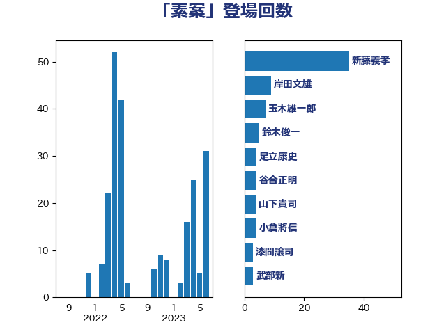

単語「素案」

| 新藤義孝 | 自由民主党 | 35 回 |
| 岸田文雄 | 自由民主党 | 9 回 |
| 玉木雄一郎 | 国民民主党 | 7 回 |
| 鈴木俊一 | 自由民主党 | 5 回 |
| 足立康史 | 日本維新の会 | 4 回 |
| 谷合正明 | 公明党 | 4 回 |
| 山下貴司 | 自由民主党 | 4 回 |
| 小倉將信 | 自由民主党 | 4 回 |
| 漆間譲司 | 日本維新の会 | 3 回 |
| 武部新 | 自由民主党 | 3 回 |
| 小山展弘 | 立憲民主党 | 3 回 |
| 近藤昭一 | 立憲民主党 | 2 回 |
| 越智隆雄 | 自由民主党 | 2 回 |
| 西村康稔 | 自由民主党 | 2 回 |
| 藤岡隆雄 | 立憲民主党 | 2 回 |
| 藤丸敏 | 自由民主党 | 2 回 |
| 若林健太 | 自由民主党 | 2 回 |
| 笠井亮 | 日本共産党 | 2 回 |
| 福島伸享 | 無所属 | 2 回 |
| 田野瀬太道 | 無所属 | 2 回 |
| 梅村聡 | 日本維新の会 | 2 回 |
| 松本剛明 | 自由民主党 | 2 回 |
| 末松信介 | 自由民主党 | 2 回 |
| 徳永久志 | 無所属 | 2 回 |
| 山本佐知子 | 自由民主党 | 2 回 |
| 山岸一生 | 立憲民主党 | 2 回 |
| 小泉龍司 | 自由民主党 | 2 回 |
| 守島正 | 日本維新の会 | 2 回 |
| 奥野総一郎 | 立憲民主党 | 2 回 |
| 大串博志 | 立憲民主党 | 2 回 |
| 中村裕之 | 自由民主党 | 2 回 |
| 馬場伸幸 | 日本維新の会 | 1 回 |
| 青柳仁士 | 日本維新の会 | 1 回 |
| 阿部知子 | 立憲民主党 | 1 回 |
| 金子恵美 | 立憲民主党 | 1 回 |
| 金城泰邦 | 公明党 | 1 回 |
| 野田聖子 | 自由民主党 | 1 回 |
| 野田佳彦 | 立憲民主党 | 1 回 |
| 西銘恒三郎 | 自由民主党 | 1 回 |
| 若宮健嗣 | 自由民主党 | 1 回 |
| 舟山康江 | 国民民主党 | 1 回 |
| 紙智子 | 日本共産党 | 1 回 |
| 稲津久 | 公明党 | 1 回 |
| 稲富修二 | 立憲民主党 | 1 回 |
| 神津たけし | 立憲民主党 | 1 回 |
| 田村貴昭 | 日本共産党 | 1 回 |
| 田名部匡代 | 立憲民主党 | 1 回 |
| 渡辺創 | 立憲民主党 | 1 回 |
| 永岡桂子 | 自由民主党 | 1 回 |
| 柴山昌彦 | 自由民主党 | 1 回 |
| 柳ヶ瀬裕文 | 日本維新の会 | 1 回 |
| 東徹 | 日本維新の会 | 1 回 |
| 本村伸子 | 日本共産党 | 1 回 |
| 新垣邦男 | 立憲民主党 | 1 回 |
| 打越さく良 | 立憲民主党 | 1 回 |
| 後藤茂之 | 自由民主党 | 1 回 |
| 岬麻紀 | 日本維新の会 | 1 回 |
| 山添拓 | 日本共産党 | 1 回 |
| 小林鷹之 | 自由民主党 | 1 回 |
| 小林一大 | 自由民主党 | 1 回 |
| 宮本岳志 | 日本共産党 | 1 回 |
| 宮崎政久 | 自由民主党 | 1 回 |
| 堂込麻紀子 | 無所属 | 1 回 |
| 坂本哲志 | 自由民主党 | 1 回 |
| 國重徹 | 公明党 | 1 回 |
| 吉良よし子 | 日本共産党 | 1 回 |
| 北神圭朗 | 無所属 | 1 回 |
| 北側一雄 | 公明党 | 1 回 |
| 前原誠司 | 国民民主党 | 1 回 |
| 倉林明子 | 日本共産党 | 1 回 |
| 佐藤正久 | 自由民主党 | 1 回 |
| 佐藤啓 | 自由民主党 | 1 回 |
| 今井絵理子 | 自由民主党 | 1 回 |
| 井上哲士 | 日本共産党 | 1 回 |
| 上田勇 | 公明党 | 1 回 |
| 上月良祐 | 自由民主党 | 1 回 |